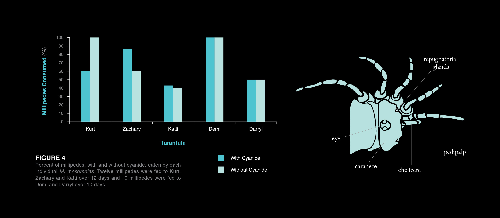
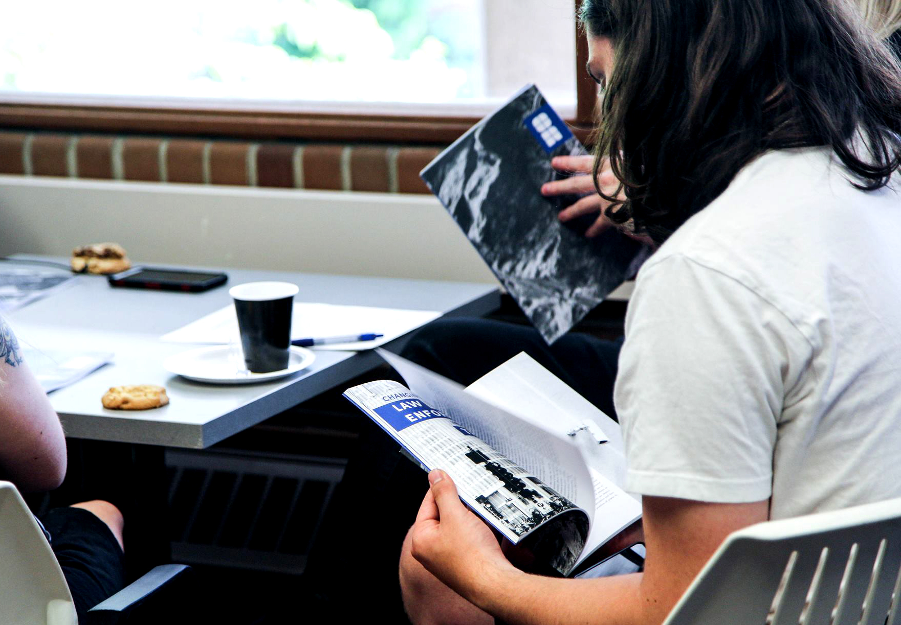
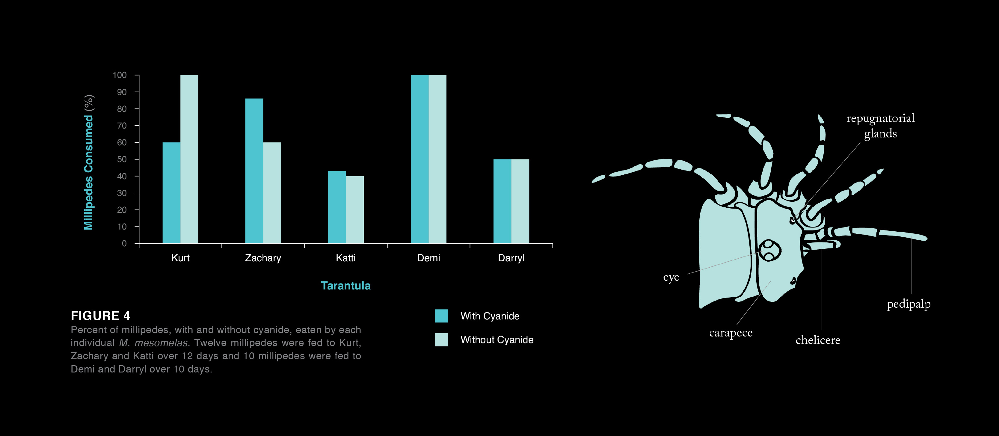
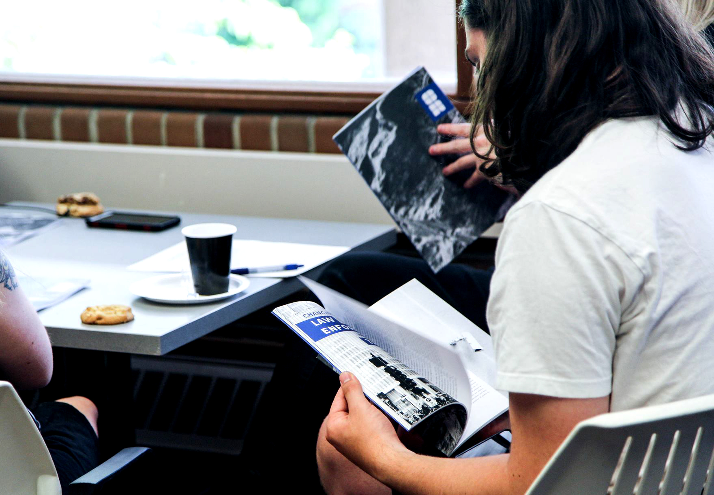

Over the past two years, I have designed for WWU's academic journal, Occam's Razor. For the 2017-18 school year, I served as OR's lead designer and art director, directing a team of four talented design students to create Volume 8's print layout and branding. I was previously a design intern for Vol. 7.
OR's mission is to bring excellent academic undergraduate writing to a broader campus audience. The design team's goal is to showcase these papers in a professional, attentive, and minimal way, celebrating hours of research and editing that would otherwise go unseen.
READ OCCAM'S RAZOR VOL. 8

 


